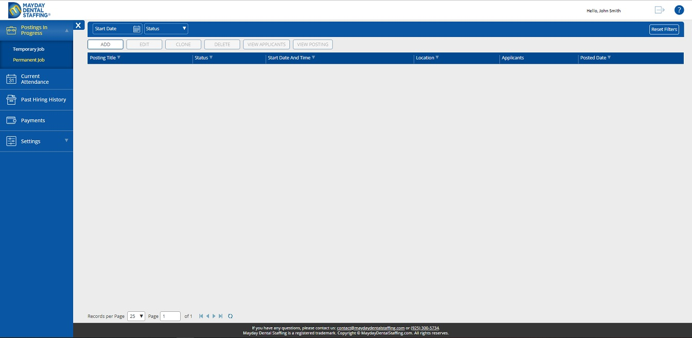

Note: A doctor should add at least one Location.
Note: A doctor should add at least one Payment Method.
Note: If a doctor has a preferred Credit Card payment method, be
sure that the card is valid (Expiration Date, Available Resources).
A doctor is able to make a posting for a long period of time. One needs to open
Postings In Progress/Permanent Postings View.
When there is
no temporary posting in progress, next view is displayed.
